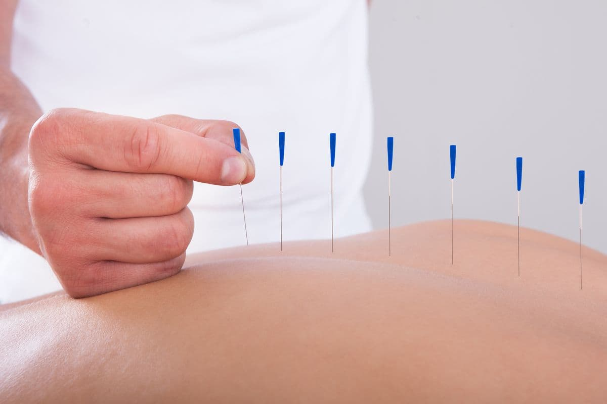
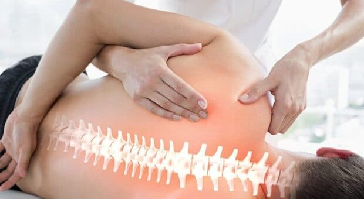
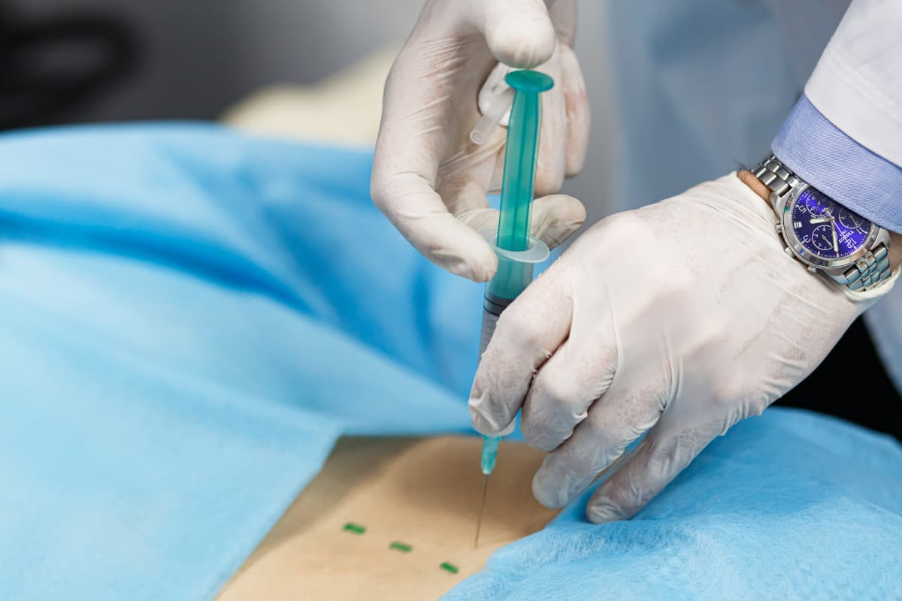
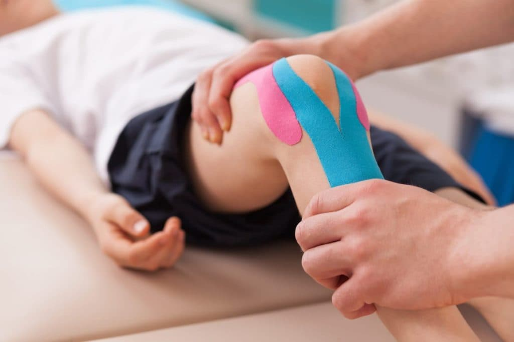

Розглянемо ключові методи лікування, засновані на сучасних медичних підходах та передових технологіях. Методи спрямовані на забезпечення ефективного та індивідуалізованого лікування різноманітних неврологічних захворювань. Від врахування симптомів до визначення оптимального лікувального шляху, ми прагнемо забезпечити нашим пацієнтам найкращі результати для здоров'я та благополуччя.
-
Фармакотерапія
Фармакотерапія є ключовим елементом лікування, використовуючи лікарські препарати для здійснення впливу на певні біохімічні процеси в організмі пацієнта. Цей метод дозволяє контролювати симптоми та зменшувати запалення, сприяючи полегшенню стану. Фармакотерапія широко використовується для лікування різноманітних неврологічних захворювань, забезпечуючи ефективні та індивідуалізовані рішення для кожного пацієнта.
-
Ін'єкційні методи
Локальна ін'єкційна терапія: Введення ліків безпосередньо в уражену область.
Вплив на біль, блокуючи нервові сигнали. Лікувальні блокади: Вплив на біль, блокуючи нервові сигнали.
Мезотерапія: Введення мікродоз ліків для покращення місцевого стану.
Пролотерапія: Використання розчинів для підтримки та відновлення тканин.
Блокада триггерних точок: Введення ліків для зняття напруги в м'язах.
- 
- 
-
Мануальна терапія та реліз
М'які техніки мануальної терапії: Лагідні впливи на м'язи та суглоби.
Міофасціальний реліз: Робота з м'язовими фасціями для полегшення напруги.
Остеопатія: Цільовий вплив на суглоби та тканини.
-
Рефлексотерапія
Рефлексотерапія: Вплив на біологічно активні точки для відновлення балансу.
- 
- 
-
Кінезіологічні методи
Кінезіологічне тейпування: Використання спеціальних стрічок для підтримки м'язів та суглобів.
Ботулінотерапія больових розладів та дистоній: Введення ботуліну для полегшення болю та м'язових розладів.
-
Плазмотерапія та ботулінотерапія
Плазмотерапія в неврології та ортопедії: Використання пацієнтської плазми для лікування.
Ботулінотерапія больових розладів та дистоній: Введення ботуліну для полегшення болю та м'язових розладів.